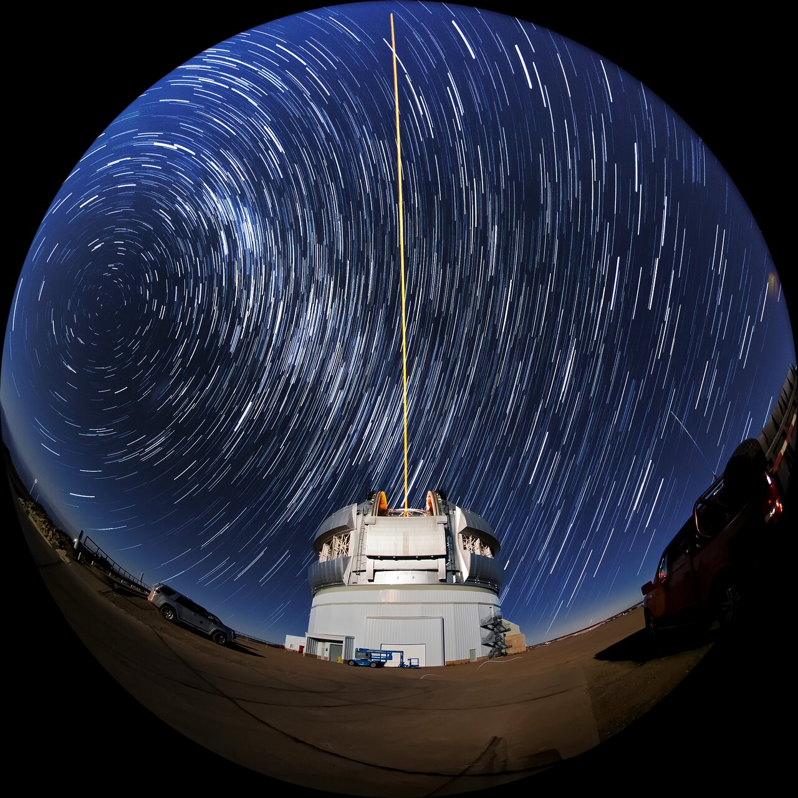

Per chi guarda il cielo, Starlink non è soltanto una rete invisibile. I primi gruppi di satelliti hanno prodotto una sorpresa immediata: file luminose riconoscibili a occhio nudo. Per gli astronomi, la questione è più precisa. Un oggetto che attraversa un’esposizione può lasciare una traccia, compromettere una misura o introdurre un segnale estraneo. La connettività ha un valore; anche la possibilità di studiare l’universo ne ha uno.
Il treno non racconta tutta la vita del satellite
Dopo il lancio i veicoli si trovano relativamente vicini e devono raggiungere le proprie posizioni. Il loro aspetto cambia con quota, orientamento e geometria rispetto al Sole e all’osservatore. Un satellite può essere illuminato mentre il terreno sottostante è già al buio. Il crepuscolo è quindi particolarmente importante, ma non ogni osservazione subisce lo stesso impatto.
Una fotografia spettacolare non misura da sola il danno scientifico. Allo stesso modo, dire che il treno diventa meno evidente non dimostra che il problema sia scomparso. Un telescopio sensibile può registrare oggetti che una persona non nota. Servono misure sul tipo di osservazione, sulla luminosità e sulla frazione di immagini interessate.
Le misure, non soltanto le impressioni
Lo studio di Mróz e colleghi sulle immagini dello Zwicky Transient Facility documentò un aumento delle esposizioni crepuscolari segnate da Starlink, da meno dello 0,5% nel 2019 a circa il 18% nell’agosto 2021. Si tratta di quel campione e di quelle epoche, non della percentuale di tutta l’astronomia danneggiata nel 2026. La ricerca mostrò anche l’utilità delle mitigazioni e i loro limiti.
Il lavoro astronomico non consiste sempre nell’eliminare una linea con un filtro. Alcuni segnali sono rari, transitori o vicini alla soglia di rilevazione. Un intervento può rimuovere insieme il disturbo e un’informazione utile. Il costo comprende tempo di osservazione, elaborazione e verifica dei risultati.
Rendere i satelliti meno luminosi
SpaceX ha sperimentato rivestimenti, schermature e scelte di orientamento, evolvendo dalle prime prove verso soluzioni compatibili con i satelliti successivi. Il documento sulle buone pratiche descrive questi interventi come parte del progetto. È giusto riconoscere il lavoro compiuto; l’efficacia va però verificata attraverso osservazioni, per ciascuna generazione e nelle condizioni rilevanti.
Una modifica favorevole all’astronomia può avere conseguenze termiche, energetiche o operative. Il compromesso deve essere affrontato prima di produrre migliaia di esemplari. Non basta presentare una vernice scura come una soluzione definitiva per qualsiasi telescopio.
Il cielo radio
L’astronomia radio cerca segnali debolissimi. Le trasmissioni utili di una rete possono interferire con le osservazioni; bisogna inoltre considerare emissioni indesiderate e comportamento dell’elettronica. Le due questioni non sono identiche. Proteggere una banda destinata alla ricerca non significa soltanto spegnere un servizio commerciale su un canale vicino.
NSF e SpaceX hanno sviluppato accordi di coordinamento. Il lavoro descritto dalla fondazione include scambio automatico delle informazioni necessarie a proteggere osservazioni radio. Questo mostra una strada concreta: usare tempi, direzioni e frequenze per evitare alcuni conflitti. Non rende superflue verifiche indipendenti e regole per gli altri operatori.

Un bene che non appartiene soltanto ai clienti
IAU CPS chiede che la protezione del cielo oscuro e silenzioso sia trattata come una responsabilità condivisa. La questione supera il singolo osservatorio: coinvolge cultura, paesaggio, educazione e ricerca. Le mitigazioni volontarie sono utili, ma una nuova costellazione non dovrebbe ripartire ogni volta da zero.
Riconoscere questo problema non richiede di negare il beneficio di Internet in territori isolati. Richiede di evitare una falsa scelta fra due valori reali. La tecnologia migliore è quella che riduce il conflitto prima che diventi un costo imposto agli altri. Per approfondire, la serie istituzionale SatCons 101 offre lezioni video sui diversi impatti delle costellazioni.
Fonti pubbliche e tracce
- Mróz e altri, studio sull’impatto Starlink nelle osservazioni ZTF. Ricerca originale sulle immagini, riferita alle epoche e ai campioni dello studio, non a tutta l’astronomia.
- SpaceX, Brightness Mitigation Best Practices. Soluzioni tecniche dichiarate dall’operatore; efficacia da confrontare con misure astronomiche.
- NSF, accordo di coordinamento astronomico con SpaceX. 10 gennaio 2023: collaborazione e protezione delle osservazioni.
- NSF, tecniche condivise per radioastronomia e Starlink. Condivisione automatica di informazioni per limitare le interferenze durante le osservazioni.
- IAU CPS, raccomandazioni per il cielo oscuro e silenzioso. 14 marzo 2024: prospettiva della comunità astronomica, mitigazioni volontarie e quadro regolatorio.
- IAU CPS, SatCons 101. Serie didattica istituzionale su costellazioni, impatti e regole.